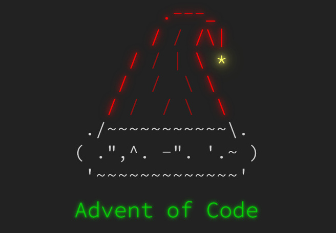

For our final meeting of the fall semester, we had the pleasure of introducing Advent of Code. If celebrating the month-long extravaganza of Hacktoberfest was not enough to satisfy our hacking hunger, December presents us with another occasion to celebrate the community we love so much. AoC is an online Advent calendar of two-part daily programming challenges that becomes gradually more difficult as the month progresses. This presents a great (and festive ⛄️) opportunity to learn a new programming language, compete with others, or just have fun solving interesting problems.
As a club, NDLUG regularly engages with Advent of Code. You might find us comparing problem-solving approaches or engaging in competitive banter regarding the leaderboard in club‚Äôs IRC server. Be sure to sign up if you wish to take part in either of those üëÄ.
If you happened to have missed us, be sure to join us next year for AoC 2023! You don’t want to miss out.
Meeting slides can be found here, and a special thank you goes out to our president, jsull, for his bravery in live demo-ing AoC during the meeting to get us into the holiday spirit.
